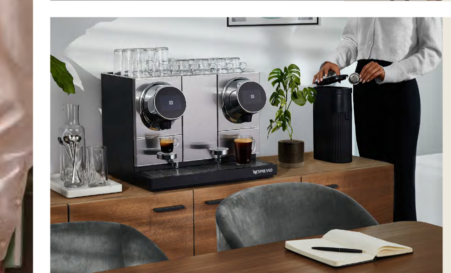

Faculty lounge coffee program — budget request
Paul Niehaus has approved the equipment purchase for the faculty lounge: a Momento 200 professional espresso machine with a complimentary side milk frother. This sheet summarizes the machine, surveyed faculty demand, the case for the investment, and the monthly capsule budget needed to keep the lounge supplied.
Double brew-head professional espresso machine + side milk frother

Survey conducted February 2026.
*One respondent wrote in: "none without milk, probably around 3 if there is milk" — counted at 3.
*Midpoints used; "5+" counted as 6.
The faculty lounge exists, but today there is no reason to go there. Without a daily draw, colleagues don't cross paths outside of scheduled meetings — and the informal conversations where ideas sharpen, collaborations form, and students get mentored simply don't happen. A good espresso machine is the cheapest, most reliable way to turn an empty room into a shared anchor point.
At Princeton, we had this exact Nespresso machine in the department lounge. It became the default stop after every seminar — the place where the real discussion of the paper happened, and where junior faculty and students actually got to speak with the speaker.
At Yale, the espresso machine anchored a post-lunch gathering for the entire department. People came for coffee and stayed for the conversation.
Both departments treated the machine as research infrastructure, not a perk.
Proximity and unplanned encounters are well-documented drivers of academic collaboration. Thomas Allen's classic MIT finding is that the frequency of technical communication between colleagues falls sharply with physical distance — a shared space with a reason to show up is worth far more than an adjacent hallway.
A 2022 Nature Human Behaviour study of 61,000 Microsoft employees (Yang et al.) similarly found that without casual in-person contact, professional networks become more siloed and cross-group information flow collapses.
The same dynamic applies inside a department. The coffee machine is the anchor.
$320/month is a small line item. What it buys — a daily, low-friction reason for the faculty to share a room — is the kind of infrastructure that compounds into collaborations, mentorship, and the culture of the department. This is an investment in cohesion, not a coffee budget.
The ask
Covers 8 boxes of 50 capsules per month at the Classics rate — enough to serve projected faculty demand with a small buffer. Capsules only ship in boxes of 50, so the monthly order rounds up to the next box. No minimums, no contract — pay only for what we order.
Capsules are sold only in boxes of 50, so the monthly order is rounded up to the nearest box. Price per box is the Classics / Flavored / Starbucks rate ($40, i.e. $0.80 per capsule), confirmed by Erin Martinez, Sr. Field Sales Specialist at Nespresso Professional. Single-origin capsules run $44.50 per box and organic $47.00; a fully organic mix would add roughly $56/month.